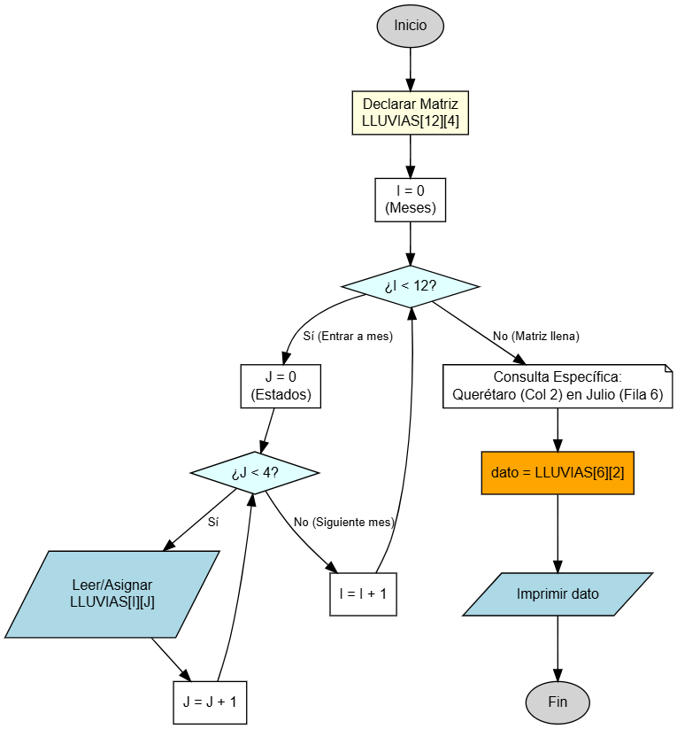

Lluvias Mensuales por Estados
Almacenando datos en una tabla (Matriz) Hasta ahora hemos usado listas simples (arreglos unidimensionales), pero ¿qué pasa cuando tenemos datos que dependen de dos factores, como "Meses" y "Estados"? En este ejercicio aprenderás a utilizar Arreglos Bidimensionales (también llamados Matrices) para representar una tabla de datos completa.

Objetivo
Crear un programa que permita almacenar y consultar las lluvias caídas (en milímetros) en 4 estados de la República Mexicana durante los 12 meses del año. Utilizarás una matriz donde los renglones representarán los meses y las columnas representarán los estados.
Tabla de Datos (Referencia)
| Meses / Lluvias | Morelos | México | Querétaro | Puebla |
|---|---|---|---|---|
| Enero | 50 | 45 | 60 | 58 |
| Febrero | 7 | 3 | 15 | 22 |
| Marzo | 12 | 10 | 8 | 17 |
| Abril | 15 | 5 | 20 | 35 |
| Mayo | 22 | 30 | 15 | 22 |
| Junio | 50 | 90 | 60 | 100 |
| Julio | 85 | 130 | 20 | 88 |
| Agosto | 70 | 75 | 88 | 94 |
| Septiembre | 65 | 49 | 53 | 105 |
| Octubre | 28 | 37 | 29 | 37 |
| Noviembre | 35 | 15 | 22 | 4 |
| Diciembre | 17 | 8 | 14 | 0 |
Variables a Declarar
- LLUVIAS: Arreglo bidimensional de tipo real (
double). Tendrá dimensiones [12][4] (12 filas para meses, 4 columnas para estados). - I: tipo entero (
int) - Índice para controlar los renglones (Meses). - J: tipo entero (
int) - Índice para controlar las columnas (Estados).
Operaciones a Realizar
- Declarar la matriz LLUVIAS de 12x4.
- Llenar la matriz con los datos. (Para este ejercicio, puedes asignar los valores directamente en el código o leerlos, según te sea más fácil, pero asegúrate de que la posición [0][0] corresponda a Enero en Morelos y [11][3] a Diciembre en Puebla).
- Imprimir un dato específico para verificar que la matriz funciona: La lluvia caída en el Estado de Querétaro (columna 3) durante el mes de Julio (renglón 7).
Coordenadas Importantes
Recuerda que en programación los índices suelen empezar en 0:
- Enero = Fila 0
- Morelos = Columna 0
- Querétaro = Columna 2
- Julio = Fila 6
Resultado Esperado
--- Consulta de Lluvias --- La lluvia en Queretaro en el mes de Julio fue: 20.0 mm